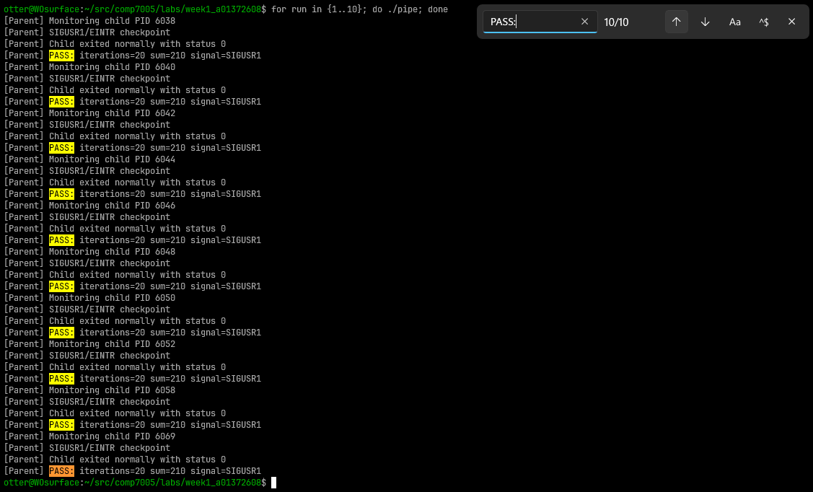
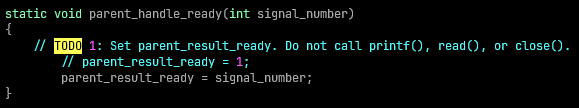
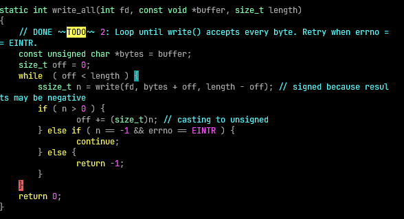
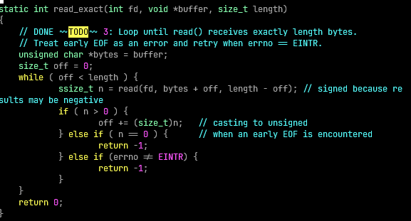
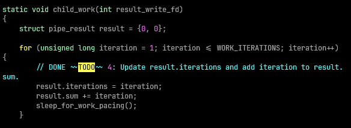
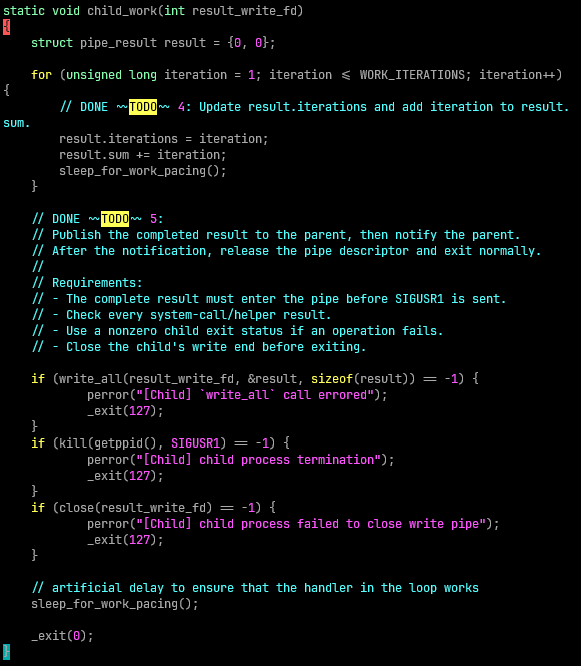
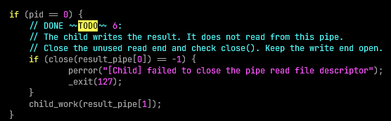
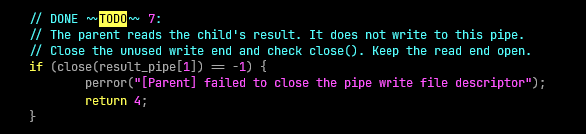
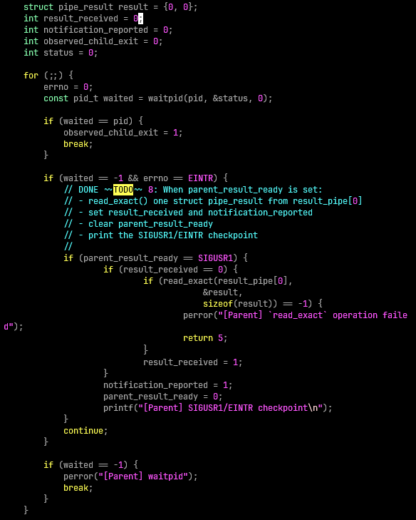
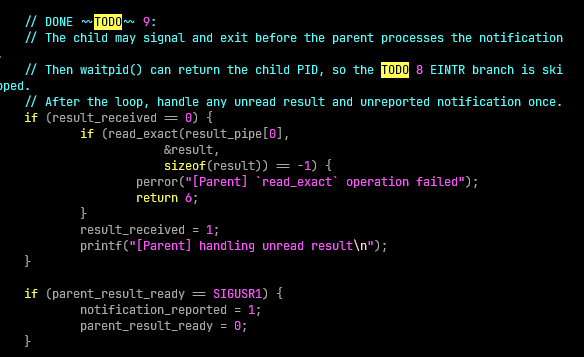

Will Otterbein, A01372608
Here are the results of executing the compiled pipe binary 10 times (just to confirm they are the same):

parent_handle_ready implementation

parent_result_ready flag to have the value of 1 (simply meaning this has been received), casting the signal number parameter to void is done to silence a compiler warning that was complaining about the unused parameter (Cole, classmate, told me about this solution). I had initially just used to signal number as the flag value, but I decided I liked Cole's solution better so that the flag value (and checks against the flag value), need not be dependent on the signals value.parent_result_ready as per the template code is a volatile variable of the sig_atomic_t type.write_all implementation

bytes and an offset tracker of type size_t named off.off (which is a byte offset) is less than the length of the input buffer, variable length. For each iteration, the write syscall is attempted, starting from the bytes pointer plus whatever the offset is currently, and for a length that is the entire buffers length minus the offset (ie. the remaining memory segment). If write succeeds (n > 0) then we increment the offset & loop, if there is an error (n == -1) but errno is EINTR we continue, otherwise the function returns w/ an error value of -1. Successful return value is 0.read_exact implementation

bytes to the buffer and an offset tracker of type size_t named off.off is less than the length of the input buffer (named buffer). For each iteration the read syscall is attempted, starting from the bytes pointer plus whatever the offset is currently, and for a length that is the entire buffers length minus the offset (ie. the remaining memory segment). If the read succeeds (n > 0) then we increment the offset & loop (if the entire segment wasn't read then we will read the remainder), if there was an error executing read that does not have errno equalling EINTR, or EOF is encountered early, we return -1 error value, and a successful return is once again 0.child_work result struct field population

child_work result struct write to pipe, send signal to parent, close write file descriptor

result struct (pipe_result_type), we invoke the write_all function previously described, we give the result_write_fd as the file descriptor (if this call fails returning -1, we log this error and exit w/ a non-zero exit code). Then the kill syscall is used to send the SIGNUSR1 signal to the parent process. It this syscall fails, we log an error and exit w/ a non-zero exit code. The final syscall in this method is the close syscall on the result_write_fd file descriptor, checking for errors (logging + error exiting from the function if an error with this syscall occurs).getppid syscall (as per man 2 getppid there is no need to handle syscall errors for this syscall, because it always succeeds).for this TODO, I added a sleep after closing the file descriptor & sending the signal to test that the logic in the loop & the outer logic were both accomplishing the same thing, I found without this delay the child process would always exit before the signal was processed in the main loop.

fork is the value 0 this means that the execution context is that of the child process, and so this todo snippet in main is responsible for closing the result_pipe read file descriptor (index 0) of the pair of file descriptors returned by the pipe syscall earlier in the template code. The child process only needs to write data to the result_pipe.child_work with the result_pipe write file descriptor (index 1 of the pair returned by the earlier pipe syscall).
main, we are closing the write pair of the result_pipe file descriptors (index 1), as the parent process does not need to write any data to the pipe (close syscall).close syscall (checking if the return of this is -1).
if (waited == -1 && errno == EINTR) condition, meaning that waitpid syscall is waiting still for the child process and that the syscall was interrupted by a signal. Then the program checks check the flag parent_result_ready equals are expected signal of SIGUSR1, if this is true we also check that result_received is 0, then we execute our implementation of read_exact into the target struct named result, checking for the error return value of -1 (if there is an error, we log this and return from the program). If read_exact executes successfully, then we set result_received to 1.notification_reported to 1 inside the if block (the one checking the signal) to record that the notification was reported (we write a checkpoint message via printf as well) and reset parent_result_ready to 0.
result_received is still zero, then we execute the read operation (with error handling the same as before, an argument is to be made that I should have created a function for this as the logic is repeated), we set result_received to 1 indicating now that we have received the results from the pipe & wrote them into the result struct.parent_result_ready flag is set signal, if so it sets notification_reported to 1 & clears the parent_result_ready flag (sets it to zero).